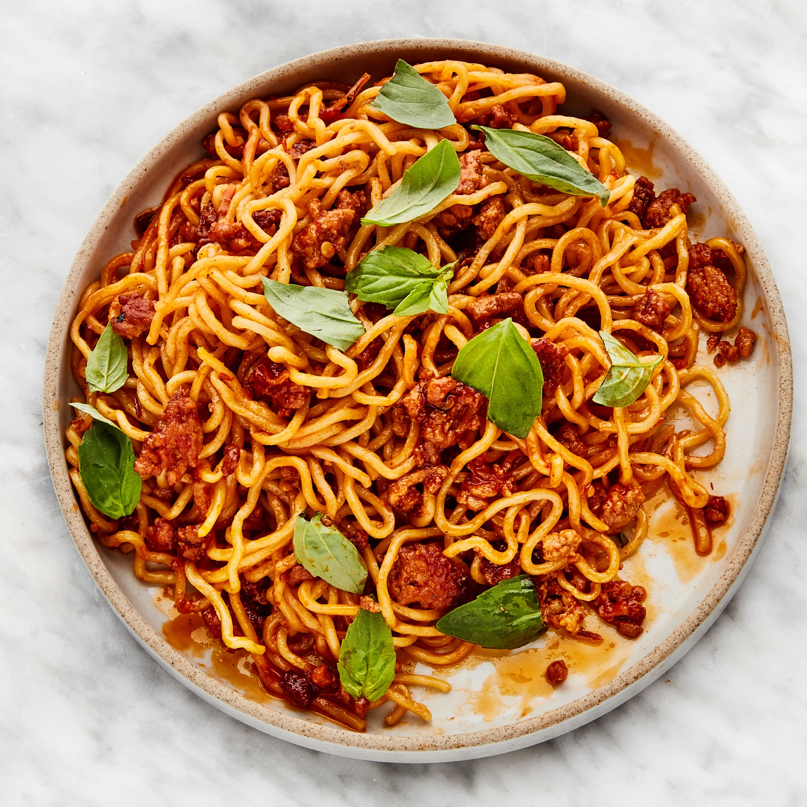
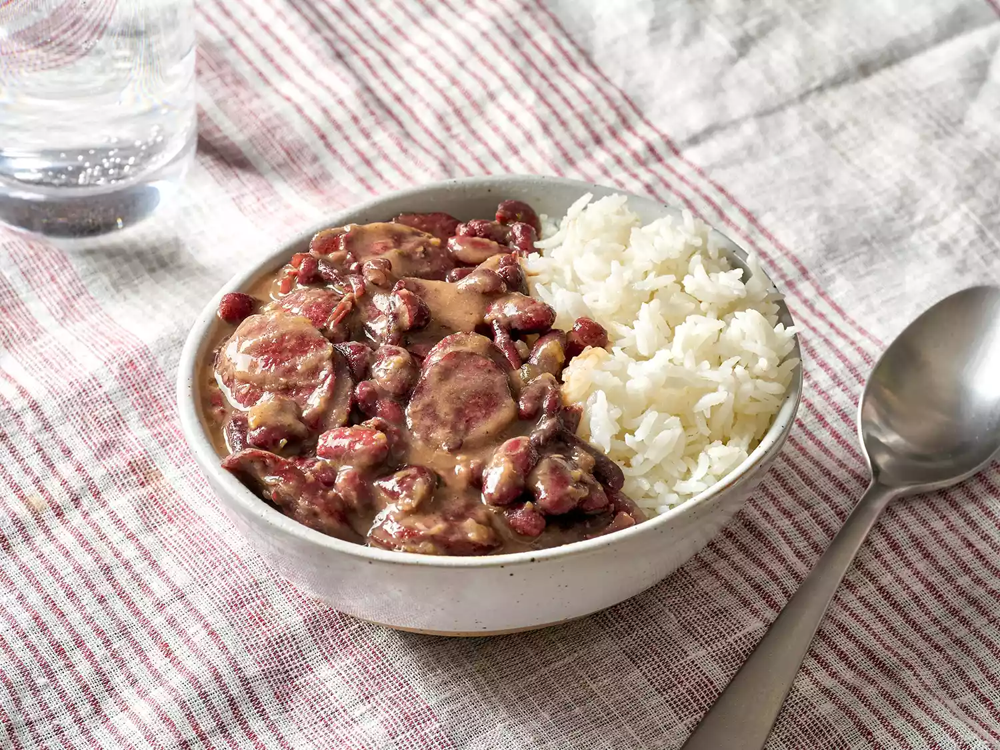
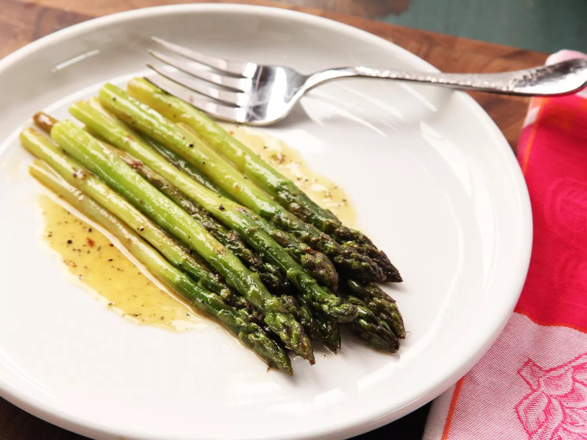
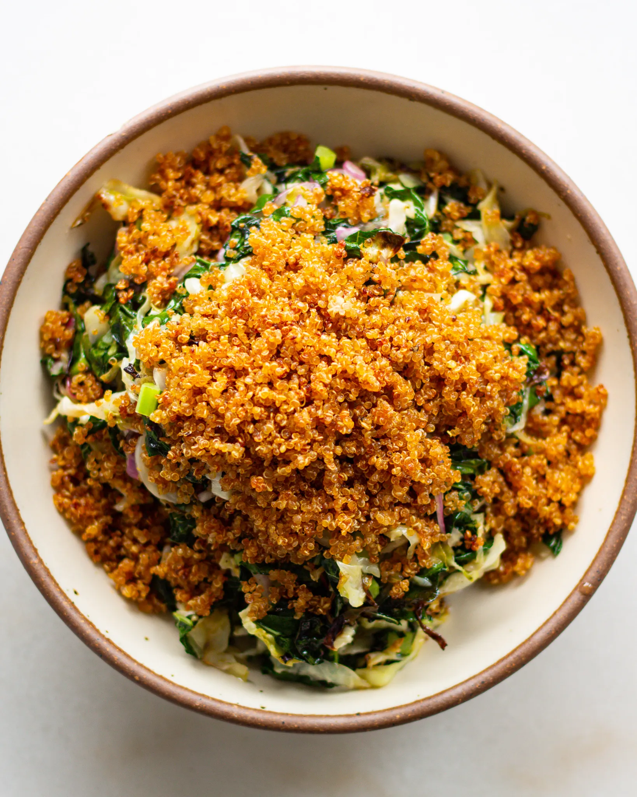
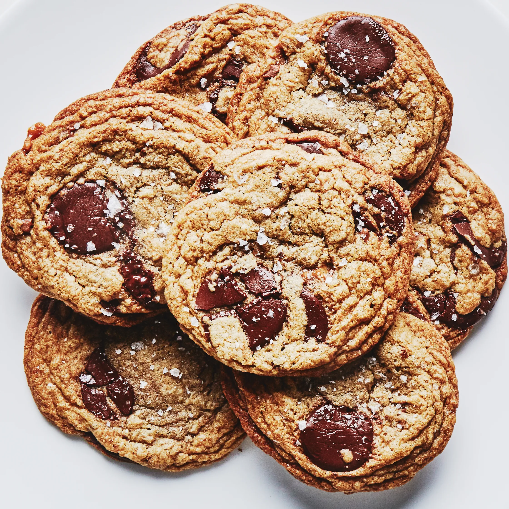

Sweet-Spicy Sambal Pork Noodles
These noodles are a family favorite! At first this dish looks a lot like classic Italian American spaghetti, but it's packed with Thai inspired flavors. The whole thing takes about an hour to prep and cook, making it suitable as a week night meal. It’s also easily adjusted to fit personal preferences.
Visit Bon Appetit for the recipe! Red Beans and Rice
Red beans and rice is the perfect meal to make while hanging out on Sundays. You can start by soaking the beans overnight, then you have to let the whole dish slow cook for around 3 hours. By the end you are left with perfect cold weather meal. The recipe yields a large pot that’s prefect for meal prepping or sharing at a party.
Visit Serious Eats for the recipe! Braised Asparagus
Braised asparagus has quickly become my go to veggie when I’m making a nice meal. Cooking the asparagus in a broth adds a lot of flavor and richness. Then reducing the broth and making a sauce with It elevates the whole dish into something special. You can experiment with different broths. I personally like to use Dashi, which adds a nice umami flavor.
Visit Serious Eats for the recipe! Baked Kale Salad with Crispy Quinoa
When the weather gets cold, I usually don’t feel like eating salad. However, this baked salad recipe has shown me that salad can be a year-round dish. Roasting the kale and cabbage at high temps makes the greens soft and golden brown. The crispy quinoa adds a lot of needed texture to the dish. The dressing has a nice balance of vinegar bite and sweetness from the honey.
Visit JustineSnacks for the recipe! Brown Butter and Toffe Chocolate Chip Cookies
For me this is the prefect chocolate chip cookie recipe. The overall cookie is soft, chewy, and has a crisp bottom. The most important part is the brown butter. It gives the whole cookie a somewhat savory quality that works really balances well with sweet elements. The toffee also adds a nice texture to the cookie.
Visit Bon Appetit for the recipe! 